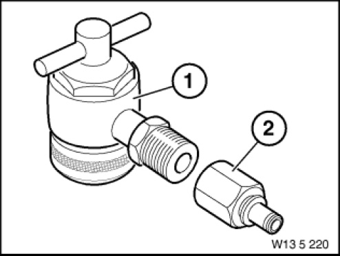

13 5 220 Adapter
13 5 220 Adapter
0491305
Minimum set: Mechanical tools
MW

NOTE: For pressure gauge 13 3 061 or BMW DIS for measuring fuel pressure at fuel injection pipe [Released]
Storage Location: B4
SI number: 01 06 95 (963)
Consisting of:
3 = 0495445 Gasket
NOTE: (Sealing kit for adapter 13 5 221) [Released]
1 = 0491306 Adapter
NOTE: Engine: M43, M44, M52, M62 [Released]
2 = 0491307 Adapter
NOTE: (Adapter) For connecting the DIS pressure sensor [Released]